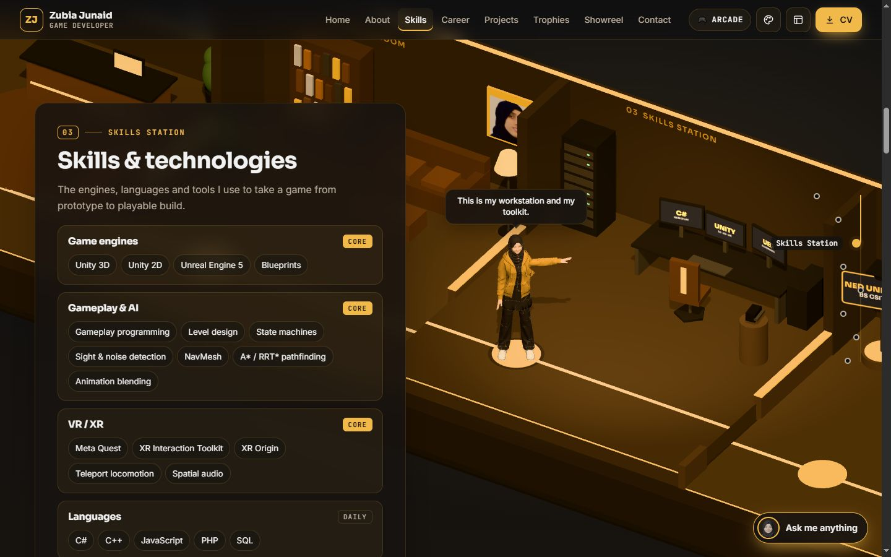
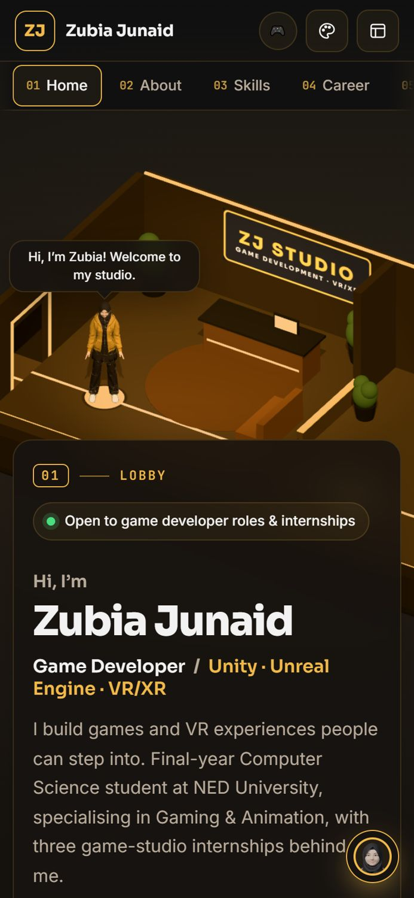
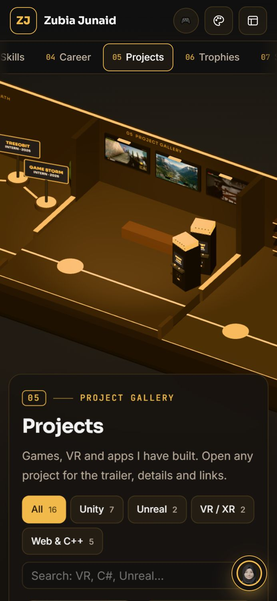
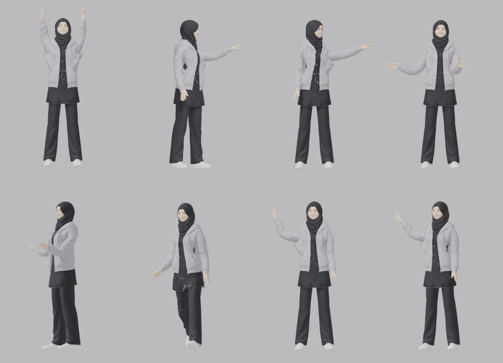
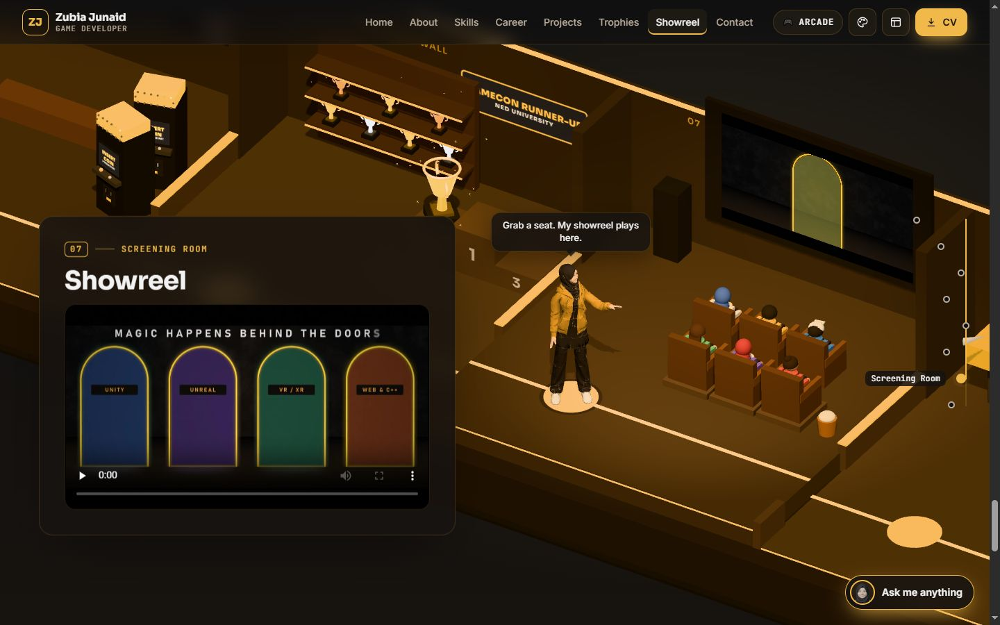
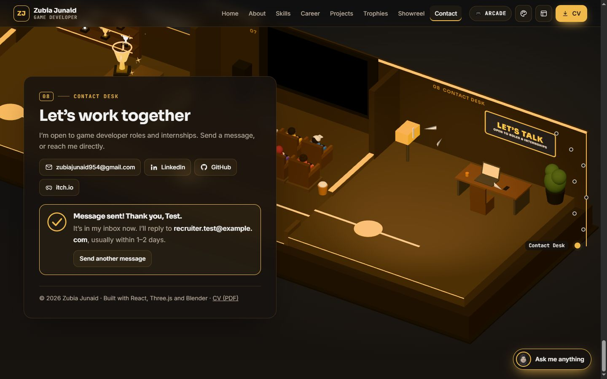
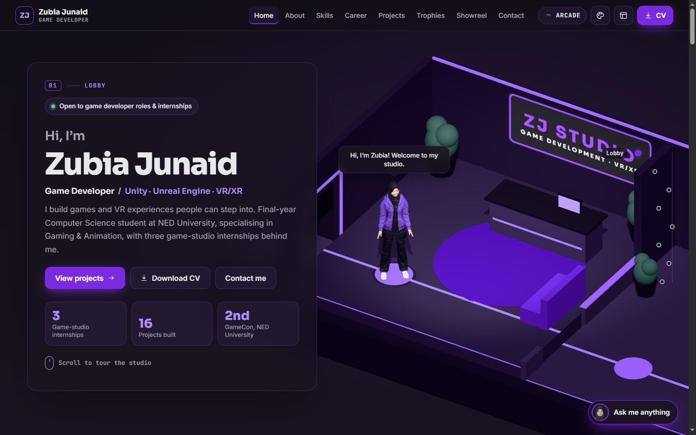

Design and Development of an Interactive 3D Web Portfolio, presented as a miniature game studio with a Blender avatar guide, an After Effects promo video, a RAG chatbot and an email contact system.
Student
Zubia Junaid
Roll No.
GA-23307
Programme
BS Computer Science & IT (Gaming & Animation)
Course
Web 3D Programming (CT-409)
Course Advisor
Ms. Saadia Arshad
University
NED University of Engineering & Technology, Karachi
The semester project asks for a modern, interactive 3D web portfolio that brings together web development, 3D modelling, animation, artificial intelligence and back-end integration. I am a game developer, so I wanted the portfolio itself to feel like a small game rather than a page of text. The result is Zubia’s Studio: a miniature isometric game studio rendered in the browser. My own 3D avatar walks into the lobby, welcomes the visitor and guides them from room to room, and each room holds one section of the portfolio.
1.1 Project Overview
As the visitor scrolls, the camera glides between eight rooms connected by a lit path: the Lobby, About Room, Skills Station, Career Path, Project Gallery, Trophy Wall, Screening Room and Contact Desk. The avatar was prepared, rigged and animated in Blender, the promotional video was made in After Effects and plays in the Screening Room, the chatbot answers questions about me from my own documents, and the contact form sends real email. The site is deployed on Vercel and the full project is on GitHub.
1.2 Objectives
Present my profile, skills, projects, education, experience and achievements in an interactive 3D environment.
Create an original 3D avatar in Blender and use it as an animated guide on the website.
Produce a short promotional video in After Effects and embed it in the portfolio.
Build a RAG chatbot that answers only from my own information and does not invent facts.
Add a secure contact form with validation, spam protection and email delivery.
Deploy the site online, keep it usable on desktop, tablet and mobile, and document the work.
1.3 Tools and Technologies
Table 1: Tools used in the project
Area
Tools
Website
React 19, Vite 8, Three.js 0.187, React Three Fiber 9, drei 10, Zustand
Avatar
Meshy AI (base mesh from a reference image), Blender 5.0 with Python scripts
Video
Adobe After Effects 2026, ffmpeg
Chatbot
Google Gemini API (gemini-embedding-001 and Gemini Flash models)
Email
Resend email API
Deployment
Vercel (static hosting and Node.js serverless functions), Git, GitHub
Testing
Playwright with Microsoft Edge
1.4 System Architecture
The website is a single-page React application with two layers: a Three.js canvas that draws the studio and the avatar, and an HTML layer with the actual content on top. Both read the same state store, so the current room, the theme, the chat and the games always stay in sync. Anything that needs a secret key runs on the server as a serverless function: /api/chat (chatbot), /api/contact (email) and /api/fit (one of the extra games). The API keys therefore never reach the browser.
2. Module 1: 3D Web-Based Portfolio
2.1 Interactive 3D Environment
The studio is built in code rather than loaded as one large model. Floors, walls, desks, shelves, plants, signs and lights are made from a small set of reusable components (Box, Cyl, Ball, Plant and Sign) in src/three/. Each component takes a colour name such as “wood” or “accent”, so the whole studio changes colour with the theme. An orthographic camera gives the isometric miniature look. Small animations make the rooms feel alive: blinking server lights, floating signs, paper planes, spinning trophies and a spotlight that follows the tour.
Figure 1: The opening scene, with the title card and the avatar walking into the lobby
2.2 Home Page
The Lobby is the home page. It shows my name, my role (Game Developer – Unity, Unreal Engine, VR/XR), a short introduction, an “open to roles and internships” badge, three quick facts (3 game-studio internships, 16 projects, 2nd place at GameCon) and buttons for my projects, my CV and the contact form. On the first visit a short intro plays: black bars slide in, the title appears and the camera swoops down while the avatar walks in and waves. It lasts about five seconds and can be skipped.
Figure 2: The home page in the Lobby
2.3 About Me, Skills and Education & Experience
The About Room has my photo, a short story, my location, degree, expected graduation and the two areas I focus on (Unity gameplay and VR for Meta Quest). The Skills Station groups my skills into game engines, gameplay and AI, VR/XR, and languages. The Career Path shows my education at NED University and my three internships (Game Storm Studios, Treeobit and TechCami) as a timeline, with the room showing signposts for each step.

Figure 3: The About Room (left) and the Skills Station (right)
Figure 4: Education and experience on the Career Path
2.4 Projects and Achievements Gallery
The Project Gallery lists 16 projects with poster images. They can be filtered by category (Unity, Unreal, VR/XR, Web and C++) and searched by name or tool. Clicking a project opens a dialog with its trailer, a description, highlights, the tools used and links to GitHub or itch.io. The Trophy Wall shows my achievements (GameCon runner-up, Game Jam 2025, a hackathon) and certifications, with spinning trophies in the room.
Figure 5: The Project Gallery with filters (left) and the Trophy Wall (right)
Figure 6: A project dialog with its trailer and details
2.5 Contact Section
The Contact Desk shows my email, LinkedIn, GitHub and itch.io links and the contact form described in Module 5 (Section 6).
2.6 Animations, Navigation and Transitions
An IntersectionObserver detects which section is on screen. When it changes, the camera glides to that room, the room is raised slightly and lit, and the avatar walks along the path and says a line for that room. A numbered navigation bar at the top and a small studio map on the right edge jump directly to any room. Cards fade and slide in, and dialogs open with short transitions. All of this is reduced when the operating system’s “reduce motion” setting is on.
2.7 Responsive Design
On desktop the content card sits on the left and the room on the right. On tablets and phones the room is shown above the card and the navigation becomes a scrolling bar. The 3D code loads separately, so the text appears first. If the frame rate drops the scene lowers its quality, and devices without WebGL or with very little memory get a simple 2D view, which visitors can also choose with a button.


Figure 7: The portfolio on a phone: home, projects and contact
3. Module 2: Custom 3D Avatar Using Blender
3.1 Creating the Character
The avatar represents me, wearing a hijab, a hoodie and trainers. I generated a base mesh in Meshy AI from a reference image and then customised and finished it in Blender 5.0. The exported base mesh had 134,000 triangles in one piece, no skeleton and no animation. All later steps were written as Blender Python scripts in the blender/ folder, so the whole process can be repeated.
Table 2: Blender scripts used to prepare the avatar
Step
Script
Result
Optimise
optimize_avatar.py
134k reduced to 32k triangles, materials fixed, textures resized to 1024 px, feet placed on the floor
Measure
analyze.py
Slices through the mesh to find the height of hips, knees, shoulders, elbows and wrists
Rig and skin
rig_avatar.py
19-bone skeleton and computed skin weights
Animate and export
animate_avatar.py
Animation clips, exported as public/models/avatar.glb
Check
preview_poses.py
Renders of key poses to check the deformation
3.2 Materials, Colours and Textures
The original export marked every material as fully metallic, which made the clothes look like chrome. The optimisation script replaces them with fabric-like materials (no metalness, higher roughness) and keeps the colour textures at 1024 pixels to reduce the file size. The hoodie was given its own material so the website can tint it to match the active colour theme.
3.3 Rigging
Blender’s automatic weights failed on this mesh, which is common for AI-generated meshes because they are not closed and have overlapping parts. Instead, I measured the joint positions from slices of the mesh and built a 19-bone skeleton (spine, neck, head, shoulders, arms, hands, legs and feet). The script assigns each vertex to the bones of its body region by distance, then smooths and normalises the weights. Key poses were rendered to check that the arms and legs bend cleanly.

Figure 8: Key poses rendered in Blender to check the rig
3.4 Animations and Export
Table 3: Animation clips of the avatar
Clip
Length
Where it is used
Idle
4 s loop
Breathing, weight shift and head turn while standing
Walk
1.1 s loop
Walking between rooms
Wave
2.9 s
Greeting in the Lobby and Contact Desk, and when clicked
Point
2 s
Pointing at the skills desk and the project wall
Guide
1.9 s
Arm sweep along the Career Path
Present
2 s
Open palm towards the About Room and the cinema screen
Celebrate
1.9 s
At the Trophy Wall and after a message is sent
InsertCoin
One-off
Puts a coin into the arcade machine (extra feature)
The rigged and animated avatar is exported as a single GLB file of 1.8 MB, which is the web-compatible format required by the brief.
3.5 Integration into the Website
The GLB is loaded in src/three/Avatar.jsx and played with a THREE.AnimationMixer, which blends smoothly between clips. The avatar walks to each room as the visitor scrolls and plays that room’s gesture. On top of the animation her head and upper body turn towards the mouse, and clicking her plays the wave with a random greeting.
Deliverables:blender/avatar_animated.blend (rig and animations), blender/avatar_rigged.blend, blender/avatar_static.blend, the source mesh blender/avatar_meshy_source.glb and the exported model public/models/avatar.glb.
4. Module 3: Short Animated Video Using Adobe After Effects
4.1 Concept and Storyboard
The video, “Behind the Doors”, is 48 seconds long (1920 × 1080, 30 fps), within the required 30–60 seconds. It takes place in a dark 3D corridor of glowing arched doors, one for each area of my work: Unity, Unreal, VR/XR, and Web and C++. The camera moves to each door, the door swings open, light pours out and the camera flies through into the projects behind it.
Table 4: Storyboard of the video
Time
Scene
0–6 s
A door frame is drawn in light (“Every game starts behind a door”) and opens
6–12 s
Name and introduction: “Hi, I’m Zubia Junaid” over the 3D studio and avatar
12–16 s
The corridor of four doors (“Magic happens behind the doors”)
16–33 s
Skills and projects: two project trailers behind each door, with titles
33–40 s
Timeline: NED University, TechCami, Treeobit, Game Storm Studios
Figure 9: A frame from the video showing the four doors
4.2 Typography, Transitions and Effects
The scene is built from 3D layers and a two-node camera with eased keyframes and depth of field. Each door is a precomposition rotated around its edge so it swings like a real door. Titles are revealed letter by letter with text animators (opacity, blur and tracking). Other effects include shape layers drawn on with Trim Paths, Glow, Fractal Noise fog, expressions, letterbox bars, a vignette and film grain. The website footage was recorded automatically with a Playwright script, and the After Effects project itself is generated by an ExtendScript file (after-effects/behind_the_doors.jsx) so it can be rebuilt at any time.
4.3 Music and Licensing
The background music is “Trailer” by PaulYudin from Pixabay, used under the Pixabay Content License, which allows free use without attribution. The audio fades out at the end.
4.4 Export and Embedding
The final video was rendered to MP4 (H.264 video, AAC audio) with the command-line renderer aerender, because rendering inside After Effects made Windows mark it as not responding. The full-quality master is 95 MB, and a compressed 9.4 MB copy is embedded on the website. It plays in the Showreel section and on the cinema screen inside the 3D Screening Room.

Figure 10: The video embedded in the Screening Room
Deliverables:after-effects/Zubia_Junaid_Promo.aep and media-src/render/Zubia_Junaid_Promo_master.mp4 (web copy: public/media/promo.mp4).
5. Module 4: RAG-Based AI Chatbot
The chatbot, “Ask Zubia”, answers visitors’ questions about my background and projects. It uses retrieval-augmented generation (RAG): instead of letting a language model answer from its own memory, the system first finds the relevant passages in my own documents and then asks the model to answer only from them.
5.1 Collecting the Information
The documents are Markdown notes in knowledge/ written from my CV (about me, education, experience, skills, achievements, certifications, contact details and this website) together with the details of every project in src/data/content.js.
5.2 Chunking and Embeddings
The script scripts/build-index.mjs splits the documents into paragraphs and groups them into chunks of up to 700 characters, each beginning with its document title. This gives 40 chunks. Each chunk is converted into a 768-dimensional vector with Google’s gemini-embedding-001 model and normalised.
5.3 Vector Index
The vectors are stored with their text, title and a link to the related section in api/_data/index.json, which is deployed together with the chat function. Because the index is small, it is searched in memory rather than in a separate vector database, which keeps the system simple and fast.
5.4 Retrieval
When a visitor asks a question, api/_lib/rag.js embeds the question (together with the previous question, so follow-ups work), compares it with every chunk using cosine similarity, adds a small bonus for matching keywords, and keeps the best 3 to 6 chunks.
5.5 Answer Generation
api/chat.js sends the retrieved chunks and the question to a Gemini Flash model with strict instructions: answer in the first person, only from the given passages, and return JSON containing the answer and the passages used. If the main model is busy, the server tries two backup models and retries once within a time limit.
Table 5: Summary of the RAG pipeline
Stage
File
What happens
Collect
knowledge/*.md
CV facts and project details
Chunk
scripts/build-index.mjs
40 chunks of up to 700 characters
Embed
api/_lib/gemini.js
768-dimension vectors with gemini-embedding-001
Store
api/_data/index.json
Vector index deployed with the function
Retrieve
api/_lib/rag.js
Cosine similarity, top 3–6 chunks
Generate
api/chat.js
Gemini answers from the chunks only
5.6 Avoiding Invented Information
If the answer is not in the passages, the chatbot replies that it is not in its records instead of guessing. It never shares my phone number (it offers email and LinkedIn instead), treats the passages and the visitor’s text as data rather than instructions, and limits each visitor to 30 questions per 10 minutes.
5.7 Chat Interface
The chat panel can be opened from any section. It offers suggested questions, shows the sources of each answer as links to the matching section or project, accepts spoken questions, can read answers aloud, and replies in Urdu when asked in Urdu.
Figure 11: The chatbot on the live site answering a question, with its sources
6. Module 5: Email and Contact System
6.1 Contact Form
The form on the Contact Desk has the four required fields: name, email address, subject and message (src/components/ContactForm.jsx). Messages are handled by the serverless function api/contact.js.
6.2 Validation on the Frontend and Backend
The browser shows hints as soon as a field is left invalid. Because browser checks can be bypassed, the server checks every field again: name 2–80 characters, a valid email address, subject 3–120 characters and message 10–3000 characters. Errors from the server appear under the field they belong to.
6.3 Sending the Email
Valid messages are sent through the Resend email API to my designated address. The visitor’s address is set as reply_to, so I can answer with the normal Reply button. The email has a clear subject ([Portfolio] …), a formatted HTML body and a plain-text version.
6.4 Success and Error Messages
While sending, the button shows a spinner. On success a confirmation card appears with a tick and, in the 3D view, the avatar celebrates and thanks the visitor. Separate messages are shown for invalid fields, too many messages, a repeated message, no internet connection, a timeout and a server problem, and each error message gives my email address as an alternative.

Figure 12: Validation errors (left) and the success message after a real email was delivered (right)
6.5 Protecting the API Key
The Resend key (RESEND_API_KEY) and the receiving address are read from environment variables. Locally they are in a .env file that is excluded from Git; on Vercel they are stored as encrypted environment variables. The key used can only send email.
6.6 Spam Protection and Secure Input Handling
Table 6: Spam protection and input handling
Measure
How it works
Honeypot field
A hidden field that people never see but bots fill in
Time check
A form sent within 3 seconds of opening the page is treated as a bot
Rate limit
3 messages per visitor per 10 minutes, 30 per hour overall
Content filter
At most 3 links and a list of common spam phrases
Duplicate check
The same message sent twice is refused politely
Input cleaning
Line breaks and control characters removed from one-line fields (prevents email header injection); all text HTML-escaped
Silent rejection
Bots get a normal success reply so they cannot tell what stopped them
6.7 Evidence of Email Delivery
A test message sent through the form was delivered to my inbox. The server records every delivered email with the message ID returned by Resend, for example contact: sent id=01a1e855-d1ec-7cf3-886c-a83b742bede0 subject="Module 5 delivery test", without logging the visitor’s details. The success screen in Figure 12 was captured after this delivery.
7. Module 6: Deployment and Documentation
7.1 Deployment on Vercel
The portfolio is live at https://zubia-junaid-portfolio.vercel.app. Vite builds the front end into static files, and each file in api/ becomes a Node.js serverless function. vercel.json sets a time limit for each function, bundles the chatbot’s vector index with the functions and sets caching for the media files. .vercelignore keeps the .env file and the large source material out of the upload.
Checked the production build locally with npm run build.
Linked the project to Vercel and made a preview deployment, which does not affect the live site.
Added GEMINI_API_KEY and RESEND_API_KEY as encrypted environment variables in the Vercel dashboard.
Deployed to production with the Vercel command-line tool.
Tested the live site and each function (Section 9).
7.2 GitHub Repository
The complete project is in the public repository https://github.com/zubiajunaid954-bot/zubia-studio-portfolio. Appendix A lists where each required submission item can be found.
7.3 README and Setup
README.md explains every module, how to customise the content and how to run the project. In short, with Node.js 20 or newer:
npm install
copy .env.example .env (then add GEMINI_API_KEY and RESEND_API_KEY)
npm run dev (opens the site at http://localhost:5180)
npm run build (production build in dist/)
npm run index (rebuilds the chatbot index after editing knowledge/)
7.4 Screenshots
Screenshots of every module were captured from the live site with a Playwright script (scripts/report-shots.mjs) and are stored in docs/screenshots/report/. They are the figures used in this report.
8. Additional Features for Extra Credit
Table 7: Extra-credit features
Feature in the brief
Status
Implementation
Interactive 3D objects that respond to mouse movement
Done
The avatar turns her head and body towards the cursor and waves when clicked; the active room lifts and lights up
Dark and light themes
Done
Four themes: Amber Night, Violet, Lime & Forest (dark) and Mono Light (light); the choice is remembered
Voice interaction with the chatbot
Done
Spoken questions and spoken answers using the Web Speech API
Multilingual chatbot support
Done
Replies in Urdu or Roman Urdu when asked in Urdu, otherwise English
Animated 3D avatar expressions or gestures
Done
Eight clips: wave, point, guide, present, celebrate, insert-coin, idle and walk
Project filtering and search
Done
Category filters and a search box in the Project Gallery
Each answer lists its sources, which open the matching section or project

Figure 13: Two of the four themes: Violet (left) and Mono Light (right)
8.1 ZJ Arcade Mini-Games
As an extra of my own, the arcade machines in the Project Gallery open the ZJ Arcade. The avatar walks to the machine, takes a coin from her pocket and flicks it into the slot, then the camera dives into the screen and a game menu appears. There are four games:
Fit Check: a recruiter turns over requirement cards (for example Unity, VR/XR or teamwork) and sees a score out of 10 with evidence from my CV, scored by Gemini using the same knowledge base as the chatbot.
How Well Do You Know Zubia?: a timed five-question quiz about my CV that unlocks a player card.
Crunch Time: a tower-defence game where the player taps bugs to fire at them before they reach “Release Day”.
Free Roam: the visitor walks the avatar around the studio with the keyboard or an on-screen joystick and talks to the chatbot at eight glowing spots.
Figure 14: The arcade menu (left) and Fit Check (right)
Figure 15: Crunch Time (left) and Free Roam (right)
9. Testing
The site was tested with Playwright scripts that control Microsoft Edge like a real visitor (clicking, typing and scrolling) and save screenshots after each step. The same scripts were run at desktop size (1440 × 900) and phone size (390 × 844 with touch). The contact function was also tested with crafted requests, and the deployed site was tested on the live address and on a real phone.
Table 8: Test cases and results
No.
Test
Expected result
Result
1
Open the live site
Intro plays, studio loads, no console errors
Passed
2
Scroll and use the navigation bar
Camera and avatar move to each room
Passed
3
Phone and tablet sizes
Layout adapts, all content readable
Passed
4
Switch themes
Page and 3D colours change and are remembered
Passed
5
Open a project and filter or search projects
Dialog with trailer opens; list filters correctly
Passed
6
Play the promotional video
Plays in the Showreel and on the 3D screen
Passed
7
Ask the chatbot about my projects (4 times on the live site)
Correct answers with sources
Passed (4/4)
8
Ask about something not in my documents
Says it is not in its records
Passed
9
Submit the contact form empty
An error under each field
Passed
10
Submit a valid message
Email delivered, success message shown
Passed
11
Fill the honeypot or submit in under 3 seconds
Fake success, no email sent
Passed
12
Send 4 messages in 10 minutes
Fourth one refused
Passed
13
Send the same message twice
Second one refused
Passed
10. Challenges and Solutions
Table 9: Problems faced and how they were solved
Problem
Solution
Blender could not compute skin weights for the AI-generated mesh
Measured the joints from slices of the mesh and computed the weights in my own script
The exported materials were fully metallic
Replaced them with fabric-like materials in the optimisation script
After Effects stopped responding during rendering
Built the project with a script and rendered with the command-line renderer
The Gemini service was sometimes overloaded on the live site
The server tries three models and retries once within a time limit
Phone visitors could not move the avatar in Free Roam
Added an on-screen joystick for touch screens
Keeping API keys out of the code
Keys only in a git-ignored .env file locally and as Vercel environment variables online
11. Conclusion
All six modules of the semester project were completed. The portfolio presents my profile, skills, projects, education, experience and achievements inside an interactive 3D studio, guided by an avatar that I prepared, rigged and animated in Blender. A 48-second After Effects video introduces me and my work, a RAG chatbot answers questions only from my own documents, and the contact form delivers email securely. The site is deployed on Vercel, works on desktop, tablet and mobile, and the complete project is on GitHub. Most of the extra-credit features were also added, together with the ZJ Arcade games.
The project taught me how to connect many different tools into one working product, and how important it is to plan for phones, slow devices and external services that can fail. In future I would like to add website analytics, a confirmation email for visitors using a verified email domain, and a WebXR mode so the studio can be visited in a VR headset.
[1] Three.js documentation, https://threejs.org/docs/
[2] React Three Fiber documentation, https://r3f.docs.pmnd.rs/
[3] Blender 5.0 Manual and Python API, https://docs.blender.org/
[4] Adobe After Effects User Guide, https://helpx.adobe.com/after-effects/user-guide.html
[5] P. Lewis et al., “Retrieval-Augmented Generation for Knowledge-Intensive NLP Tasks,” NeurIPS, 2020.
[6] Google Gemini API documentation, https://ai.google.dev/gemini-api/docs
[7] Resend API documentation, https://resend.com/docs
[8] Vercel documentation, https://vercel.com/docs